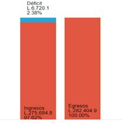
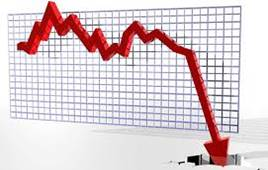

Para comenzar, es necesario comprender que todo gobierno para ejecutar y desarrollar los proyectos y actividades financieras necesita contar con una herramienta que le oriente a organizar la ejecución de esas gestiones. Para esas finalidades se elabora el Presupuesto General de Ingresos y Egresos de la República, que es el documento de política fiscal que contiene la estimación de todos los ingresos que se obtendrán durante el año, así como los egresos o gastos que el gobierno destinará en servicios de salud, educación y cultura, seguridad social, entre otros mandatos definidos en la Constitución de la República. La elaboración de esa herramienta de planificación económica como lo es el Presupuesto General de Ingresos y Egresos, está a cargo de la Secretaría de Finanzas (SEFIN). ¿Por qué es importante conocer el Presupuesto General de Ingresos y Egresos de la República? El presupuesto no es solamente un instrumento económico, su esencia es social, ya que influye en la vida diaria de las personas y empresas. Algo bien importante es que el presupuesto es financiado con los impuestos que todos y todas pagamos. Es un derecho y un deber conocer en que gastan el dinero las diferentes entidades del gobierno. Y si ya se entra al campo de los impuestos, es muy conveniente distinguir los tipos de impuestos que existen, para comprender con mayor facilidad la composición del déficit fiscal. A continuación, se describen: 1.Impuestos directos: son aquellos que gravan la renta o el patrimonio de forma directa. Es decir, si ganas o tienes más, pagas más. Ejemplo de ellos es el impuesto de la renta sobre las personas físicas, el impuesto sobre sociedades y el impuesto sobre el patrimonio.
Ahora bien, ¿Cuál es la relación entre los impuestos y el défcit fiscal?
La figura de 2 barras que se observa, es un ejemplo hipotético de déficit fiscal (lo que está representado en color azul) se convierte en la cantidad de dinero que hará falta para poder cubrir todos los gastos de un año fiscal para la Administración Central.
Tambien, el déficit fiscal tiene su propia clasificación, lo cual permite a los ciudadanos y tomadores de decisión, discriminar, cuando la estabilidad económica de un país está en un nivel de riesgo moderado o un nivel de riesgo elevado, ya que no poder cubrir los gastos por períodos demasiados largos, puede provocar hasta la misma quiebra de una economía. A continuación, le describo cada uno de ellos: 1. Déficit coyuntural o cíclico: es una situación temporal, provocada por las fluctuaciones normales de la economía. Normalmente, no necesita de ninguna acción para repararlo porque no tarda en volver a la normalidad. Durante los periodos de recesión o crisis habrá déficit. 2. Déficit estructural: es un balance negativo que se produce sin que intervengan los ciclos económicos. Es decir, en una situación económica normal, el flujo entre ingresos y gastos se desequilibra en favor de estos últimos. Son los pagos fundamentales y permanentes a los que un gobierno, una empresa o unidad familiar tienen que hacer frente de manera habitual. En este caso, sí es necesario tomar medidas para recuperar el equilibrio en las cuentas. |
Por otro lado, si existe la enfermedad, también existe la medicina, el gobierno para solventar el problema del déficit fiscal se auxilia de diferentes recursos. Un primer recurso que utiliza es el financiamiento interno: emisión de títulos valores, también llamados bonos de gobierno que pueden ser vendidos en el país. El gobierno pide prestado a residentes del país, generalmente por la emisión de bonos en los mercados financieros nacionales. Esta acción da pie, a la conformación, a lo que se conoce como deuda interna. Un segundo recurso que utiliza el gobierno para contrarrestar los niveles del déficit fiscal es el financiamiento externo: a través de préstamos con Organismos de Financiamiento Internacional, por ejemplo, el Banco Interamericano de Desarrollo (BID), Banco Mundial (BM) y el Banco Centroamericano de Integración Económica (BCIE). Este mecanismo de préstamo, es lo que se conoce como deuda externa. Los dos recursos anteriores que se mencionan como fuentes de financiamiento, entran a formar parte de la deuda pública del país. |
Universidad Nacional Autónoma de Honduras
Vicerrectoría Académica
Dirección del Sistema de Estudios de Posgrados
Dirección de Innovación Educativa
Dr. Armando Euceda
Director DSEP
Dra. Martha Leticia Quintanilla
Directora DIE
Msc. Sonia Ramos
DSEP
Ruth Gámez
Karina Carías
Carlos José Pérez Sánchez